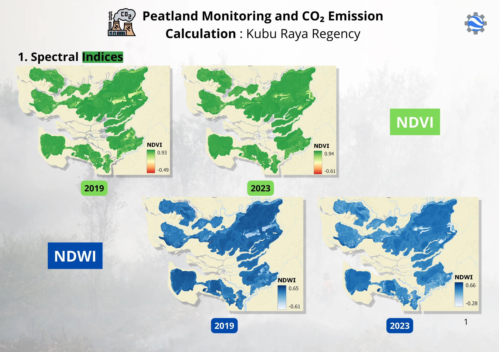

03 / Carbon & land use
Peatland change & emissions in Kubu Raya
Exploring peatland land-cover transitions, spectral indices, and emissions estimates in West Kalimantan.


The question behind the map.
This project uses satellite imagery to examine changes in peatland landscapes in Kubu Raya Regency between 2019 and 2023. The analysis connects mapped land uses with referenced emission factors.
How I approached it.
Sentinel-2 imagery was classified with a Random Forest approach into water, infrastructure, shrubland, cropland, and forest. NDVI, SAVI, and NDWI provided additional vegetation, soil, and water indicators. A transition matrix was prepared to compare land-cover categories, with QGIS used for mapping.
What the work shows.
The gallery presents land-cover classifications, spectral indices, emission factor maps, transition tables, and comparative emissions outputs. These materials describe mapped changes and calculated estimates. Annual emission rates and changes between those rates need to be distinguished from cumulative emissions over the study period.
Reading the results
Personal project. Emissions estimates are model-based rather than direct measurements. Annual emission rates, changes in annual rates, and cumulative emissions need to be interpreted separately.
Supporting materials
A closer look.
Maps and processing views from this project. Select an image to view it at a larger size, or use the arrow keys to move through the gallery.